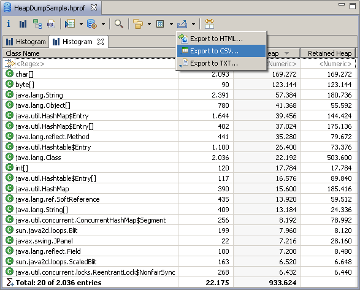
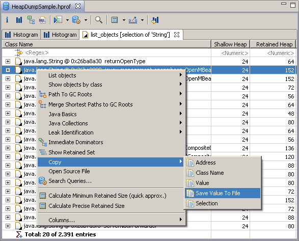

Analyzed data can be exported from the heap editor either
by:
-
Using the toolbar export menu (you can choose between export to
HTML, CSV, and TXT)

- Copy and paste to Notes view, e-mail or any text-based file.
-
Using context menu
Copy
to copy and paste address, class name or value of an object. The content of
huge arrays can be saved to a file using the Save Value to File option.
